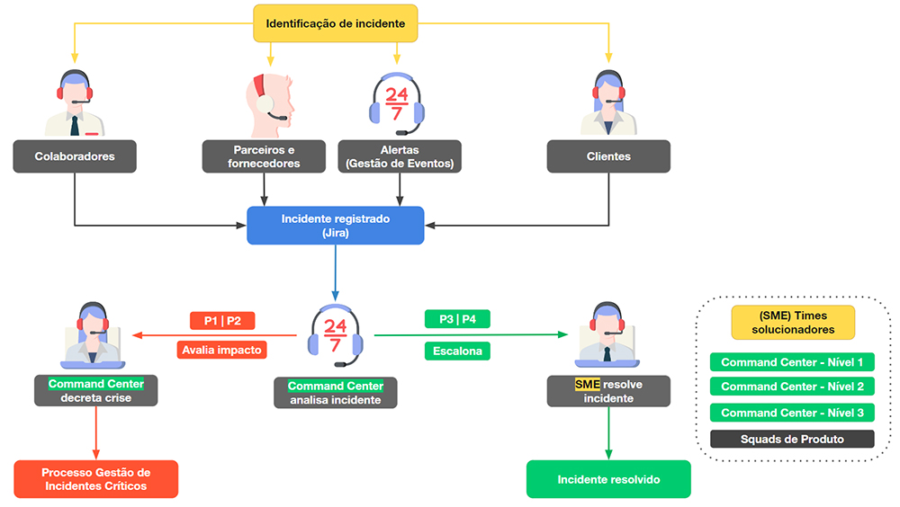

Por que registrar incidentes?
Passe o mouse sobre os cards para saber o que os registros dos incidentes permitirá:
Métricas assertivas para medir a qualidade do serviço.
Maior visibilidade do comportamento do fornecedores e parceiros e como suas falhas afetam os produtos.
Minimizar o risco de interrupções de negócios, principalmente com incidentes maiores.
Manter um histórico de incidentes, para análise de recorrência e implementação de soluções definitivas.
Aumentar a satisfação do usuário, realizando correções em falhas nos produtos e serviços.
Engajamento dos times responsáveis para solucionar os incidentes.
Como um incidente é iniciado.
Em primeiro lugar, qualquer pessoa pode abrir um incidente. É fato que a percepção de um incidente pode vir de qualquer parte da
empresa, seja de tecnologia, negócios ou administrativo.
Assim, o meio de abertura de um incidente é acessível a todos os Picpay e Original Lovers, facilitando a identificação de um incidente de qualquer criticidade. Também devem ainda ser identificados por sistemas de monitoramento ou pelos próprios usuários do aplicativo (através da equipe de atendimento ao usuário).
Os incidentes são iniciados pelas seguintes fontes e por meio de ferramentas:
Assim, o meio de abertura de um incidente é acessível a todos os Picpay e Original Lovers, facilitando a identificação de um incidente de qualquer criticidade. Também devem ainda ser identificados por sistemas de monitoramento ou pelos próprios usuários do aplicativo (através da equipe de atendimento ao usuário).
Os incidentes são iniciados pelas seguintes fontes e por meio de ferramentas:
Alertas
Por meio da monitoração de produtos e serviços do PicPay e Original, através do Command Center.
- Ferramentas de orquestração de alertas OpsGenie, Dynatrace e Zabbix

Parceiros e Fornecedores
Através de notificação por e-mail, contato telefônico e WhatsApp.
Colaboradores
Abertura via Portal de Serviços (ferramenta de ITSM Jira Service Management) e pelo Service Desse, através de contato telefônico.
Cliente
Usuário final dos produtos e serviços do PicPay e do Original.
- Contato telefônico, chat, e-mail, tratados pelos times de relacionamento com o cliente. Incidentes são registrados
nas ferramentas de ITSM Jira Service Management.
Onde gerenciar os incidentes
Aperte o play e veja o vídeo mostrando o passo-a-passo do processo.
Através do telefone (11) 2330-3533 é possível entrar em contato com o Command Center e reportar incidentes, buscar maiores informações
sobre atualização de status, entre outros. Lembrando que o time atua 24x7, então os contatos podem ser realizados a qualquer momento.
Papéis e responsabilidades
Cada um dos papéis e equipes de resposta a incidentes trabalham em regime de revezamento de plantão. O modelo de gestão dessa
escala fica a critério de cada squad.
A responsabilidade por manter a escala rotativa do plantão atualizada na ferramenta de orquestração de alertas e incidentes é de cada squad, tribo ou BU.
A responsabilidade por manter a escala rotativa do plantão atualizada na ferramenta de orquestração de alertas e incidentes é de cada squad, tribo ou BU.
Clique nos botões abaixo para conhecer cada um deles no detalhe:
Existem outros papéis na resposta a incidentes, porém são envolvidos somente no processo de Gestão de Incidentes Críticos.
O processo
Conheça como funciona o processo de Gestão de Incidentes do começo ao fim.
Clique nos títulos para expandir.
O primeiro passo para gerenciar incidentes é reconhecê-los. Os incidentes podem ser identificados pelos times de
tecnologia e colaboradores da Picpay e Original, por sistemas de monitoramento e pelos próprios usuários e clientes e
por fornecedores e parceiros.
RESPONSÁVEL: Colaboradores, times de atendimento ao cliente, ferramentas de monitoração e Fornecedores e Parceiros.
RESPONSÁVEL: Colaboradores, times de atendimento ao cliente, ferramentas de monitoração e Fornecedores e Parceiros.
Quando o incidente é detectado, ele deve ser registrado na ferramenta de ITSM Jira Service Management. Após o
registro, é enviado uma notificação do incidente no Slack:
- #INCIDENTS-TECHPP: Todos os incidentes relacionados a infraestrutura de tecnologia de produtos e serviços da PicPay. São incidentes classificados como P1, P2 e P3.
- #SUPORTEOPERACIONAL-N2: Incidentes provenientes do time de Suporte Operacional, que afetam poucos usuários, mas que não puderam ser resolvidos pelos times anteriores e precisam do envolvimento da Squad responsável. São incidentes classificados como P4.
De acordo com os critérios, produtos e serviços descritos na Matriz de Classificação de Incidentes PicPay e Original,
o Command Center Nível 1 realiza a classificação do incidente entre P1, P2, P3 e P4. Caso seja um incidente do tipo P3
ou P4, seguirá o fluxo do processo de Gestão de Incidentes e seguirá para tratativa ou escalonamento para o time
responsável.
RESPONSÁVEL: Colaboradores, times de atendimento ao cliente, ferramentas de monitoração e Fornecedores e Parceiros.
RESPONSÁVEL: Colaboradores, times de atendimento ao cliente, ferramentas de monitoração e Fornecedores e Parceiros.
O Command Center investiga, analisa impacto e fatos em busca de aplicar uma ação corretiva. Verifica se há
Runbooks atrelados e executa os procedimentos ali descritos, se aplicável.
RESPONSÁVEL: Command Center Nível 1.
RESPONSÁVEL: Command Center Nível 1.
Caso não seja possível a resolução no primeiro nível, engaja os times necessários e escalona o incidente para
a fila da squad responsável ou para o Nível 2 do Command Center.
RESPONSÁVEL: Command Center Nível 1.
RESPONSÁVEL: Command Center Nível 1.
A equipe responsável pelo incidente deve investigar e entender o que causou o incidente. Uma ação corretiva
deve ser aplicada com o objetivo de mitigar ou resolver o incidente. Essa ação aplicada deve ser validada, para
garantir que a falha foi realmente corrigida.
RESPONSÁVEL: Time responsável pelo incidente (Command Center Nível 1, Command Center Nível 2, N3, SME)
RESPONSÁVEL: Time responsável pelo incidente (Command Center Nível 1, Command Center Nível 2, N3, SME)
Após a aplicação da solução e identificado que a mesma foi eficaz e que o produto/serviço foi normalizado, o
incidente deverá se encerrado. As informações finais deverão ser registradas na ferramenta de ITSM Jira ou Hélix
e o incidente encerrado.
RESPONSÁVEL: Time responsável pelo incidente (Command Center Nível 1, Command Center Nível 2, N3, SME)
RESPONSÁVEL: Time responsável pelo incidente (Command Center Nível 1, Command Center Nível 2, N3, SME)
Vejo os principais atores e atividades do processo de gestão de incidentes.

Como registrar um incidente
Os incidentes são gerenciados durante todo o seu ciclo de vida. São reunidos em dashboards, onde os times responsáveis podem
acompanhar a evolução dos incidentes e gerenciar as prioridades e o tratamento.
Clique nas setas para saber os status dos incidentes registrados:
Clique nas setas para saber os status dos incidentes registrados:
Cada B.U. possui um dashboard no Jira onde podem acompanhar os incidentes em aberto, em andamento, entre outros. Para acessar,
visite a página do Confluence do Command Center e navegue pela documentação do processo de incidentes.
Boas práticas para gerenciar os incidentes
Durante a tratativa de um incidente, é importante a atenção a alguns pontos abaixo:
Altere sempre o status do incidente de acordo com as tratativas realizadas. Dessa forma o time sabe quais incidentes estão
pendente tratamento e precisam de atenção.
Registre as atividades realizadas para tratativa, adicionando um “Comentário” no chamado. Essa informação é importante para termos
um registro completo do incidente, agregando conhecimento para qualquer outra pessoa que for trata-lo.
Informe a causa e a solução implementada para resolução, com detalhes e encerre o incidente. Quem registrou o incidente precisa
entender o que aconteceu e saber qual a solução implementada, principalmente se precisarem dar um retorno para o cliente.
Acompanhe o dashboard com o backlog de incidentes da squad. Não deixe os incidentes acumularem, muitos deles são reclamações de
clientes e que estão aguardando um retorno.
Quer saber mais? Acesse o Confluence do Command Center para ficar pro dentro de mais detalhes sobre o processo e muito mais.
Parabéns!
Você chegou ao final do treinamento de
Você chegou ao final do treinamento de
Gestão de Incidentes
Feche essa janela e clique na avaliação.
Você deve alcançar 70% ou mais para ser aprovado.
Boa sorte!
Você deve alcançar 70% ou mais para ser aprovado.
Boa sorte!